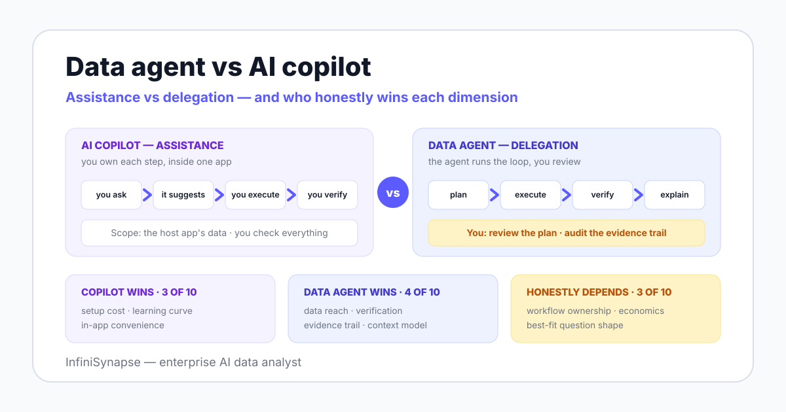

This comparison goes wrong when it becomes a feature checklist, because vendors on both sides can tick boxes. The durable distinction is the work model: who directs the process.
The canonical copilot is Microsoft 365 Copilot, which Microsoft documents as an assistant working alongside you inside apps such as Excel, Word, and Teams. The defining property is that the host application and your own judgment stay in charge: the copilot drafts, suggests, and summarizes, and you accept or reject each step.
In analytics, that pattern shows up as query drafting, chart explanation, and dashboard summarization inside BI tools — the assist layer that Gartner tracks as augmented analytics. The deeper architectural split behind that category is covered in our AI-native vs augmented analytics guide.
Anthropic's engineering guide Building Effective Agents draws the line at autonomy: agents are systems where the model directs its own processes and tool usage. A data agent applies that to analytics — it plans the analysis, retrieves business context, executes across connected sources, checks intermediate results, and delivers an answer with an evidence trail.
The pattern has measurable roots: the ReAct paper (2022) showed that interleaving reasoning with actions reduces error versus single-pass generation. By 2025, dedicated academic surveys treat data agents as a distinct system category with its own architectures and failure modes.

One column in this table names the winner per dimension, and the agent does not sweep it. If a vendor's comparison page shows their own category winning every row, treat that as evidence about the page, not the product.
| Dimension | AI copilot | Data agent | Honest winner |
|---|---|---|---|
| Workflow ownership | You drive every step; it suggests | It plans and executes; you review | Depends — control vs delegation is a preference, not a score |
| Where it lives | Inside apps you already use daily | A separate system you adopt | Copilot — zero context switching |
| Data reach | The host application's data | Databases, files, documents, web in one workflow | Agent — cross-source is the category's reason to exist |
| Context model | What is open in the app plus your prompt | Knowledge base retrieval: metric definitions, dictionaries, past cases | Agent — context is retrieved, not pasted |
| Verification | You check every suggestion yourself | Built-in checks: row counts, cross-computations, re-runs | Agent — verification is part of the loop |
| Evidence trail | Chat history, at best | Plan, queries, sources, and checks attached to each result | Agent — reviewers can reconstruct the number |
| Setup cost | Often a license toggle on existing software | Source connections, context seeding, governance review | Copilot — close to zero new procurement |
| Learning curve | Minutes; it lives where people already work | Teams must learn plan review and trail reading | Copilot — adoption friction is genuinely lower |
| Per-seat economics | Cheap per seat, cost scales with headcount | Higher entry cost, amortizes per workflow | Depends — headcount-heavy teams vs workflow-heavy teams |
| Best-fit question shape | Known data, single tool, you finish the work | Cross-source, open-ended, audit-required work | Depends — match the tool to the question, not the hype |
Score: copilots win three rows, agents win four, and three depend on your scope. That ratio is the honest market summary in mid-2026.
The conceptual axis underneath all ten rows is simple: a copilot optimizes the worker, an agent optimizes the workflow. A copilot makes one person faster at each step they already perform.
An agent removes steps from the person entirely and replaces them with review. That is the same shift described in agentic analytics: the unit of value moves from suggestions per minute to completed, verifiable workflows per week.
Delegation only works when you can check the delegate. This is why evidence trails dominate the agent side of the table — a system that executes on your data without showing its plan and queries is not an agent you should run, as we argue in explainable AI data analysis.
A copilot makes you faster at each step. An agent takes steps away from you — which is only safe when you can audit what it did instead.
Abstract dimensions hide the texture, so here are four concrete situations. The copilot wins two of them outright.
You are in your BI tool looking at a revenue dashboard and want last quarter's number for one region. A copilot answers in seconds, in the tool, with the semantic model already loaded.
Routing this through an agent adds a plan, a review, and a context switch for a question that needed none of them. When the metric is modeled and the user knows the data, assistance beats delegation on speed every time.
Now the question is: find the highest-spending customers across the JD and Tmall platforms, match their real names from a CSV file by phone number, and chart the ranking. That spans two platform databases and a file — outside any single host application, so an in-app copilot cannot reach the data at all.
InfiniSynapse handles this documented demo case as one workflow: retrieve schema from both sources, plan the phone-number join, execute through its multi-source layer, verify row counts, and chart the result with the trail attached. The manual alternative is an ETL project measured in days.
A weekly operations report that pulls from a warehouse and two spreadsheets, then lands as a formatted document, is a workflow, not a question. An agent with artifact tools — InfiniSynapse does this through its Agent Tool Market for Excel, Word, and PPT generation — produces the deliverable end to end, with each run reviewable.
A copilot can help you write each section faster, but you still assemble the report by hand every week. Assistance compounds your effort; delegation removes it.
If you are an analyst who wants a starting-point query to refine by hand, a copilot in your SQL editor is the right shape: you stay in control, iterate inline, and never leave your workflow. Benchmarks such as Spider exist precisely because generated SQL needs expert review — and in this scenario, you are the review step.
An agent's plan-review-execute loop is overhead here, because the verification the loop provides is work you intended to do anyway. Tools should not duplicate the judgment you enjoy exercising.
We will not invent dollar figures — pricing varies too much by vendor, seat count, and deployment model to fake precision. What we can compare honestly is cost structure: where the money and time go, and which side carries each burden.
| Cost line | AI copilot | Data agent | Cheaper side |
|---|---|---|---|
| License | Add-on per seat to software you already run | New product line item, often platform-priced | Copilot at small scope; converges as agent seats consolidate workflows |
| Setup and context seeding | Near zero — it inherits the host app's context | Connect sources, load metric definitions and dictionaries into the knowledge base | Copilot, clearly |
| Training | Minimal; people already know the host tool | Teams must learn plan review and evidence-trail reading | Copilot, clearly |
| Governance review | Usually covered by the existing app's security review | New review: permissions, query logs, deployment boundary | Copilot up front — though the agent review buys you audit capability copilots never produce |
| Maintenance | Vendor-managed; little to operate | Knowledge base upkeep, connection health, periodic trail audits | Copilot — unless manual multi-source work is what you are currently paying analysts to maintain |
The honest reading: copilots are cheaper on most rows at small scope, full stop. The agent case is amortization — when one governed workflow replaces recurring hours of cross-source manual work, per-workflow cost falls below copilot-assisted manual effort, and the setup investment starts paying rent.
If your AI demand is mostly individual drafting help, that crossover never arrives and you should not buy an agent. That sentence is in this page on purpose.
Answer these six yes/no questions for your team, then count where the yeses point. Mixed results are normal and usually mean "both, sequenced".
| # | Question | If yes |
|---|---|---|
| 1 | Do your routine questions span more than one system — databases plus files plus documents? | Agent |
| 2 | Do reviewers, auditors, or finance need to reconstruct how a number was produced? | Agent |
| 3 | Is most of the AI help you need inside one tool your team already licenses? | Copilot |
| 4 | Do you need value this week, with zero new procurement or security review? | Copilot |
| 5 | Do you produce recurring analysis artifacts — reports, decks, spreadsheets — on a schedule? | Agent |
| 6 | Do individual contributors also want drafting help in email, docs, and code? | Both — copilots for individuals, an agent for the analysis workflow |
"Both" deserves emphasis because comparison pages tend to force a binary. In practice, copilots and agents rarely compete for the same task: one raises personal throughput, the other owns governed workflows, and many teams fund them from different budgets.
This section exists because an agent vendor telling you when not to buy an agent is more useful than another feature grid. A copilot is the right call — not a compromise — in these situations.
There is also a failure mode worth naming: copilot suggestions accepted unchecked. A fluent wrong query is more dangerous than no query, which is why even copilot-only teams should keep a human verification habit.
An agent earns its setup, training, and governance costs when workflow ownership is the thing you are buying. The signals are concrete.
First, cross-source questions are your normal case, not your edge case — the shape that defines the category in the LLM-as-data-analyst survey. Second, your reviewers demand evidence: plans, verbatim queries, and source attribution, which is what plan-first systems like InfiniSynapse's Plan mode are built to produce.
Third, you need the agent to improve from corrections rather than repeat mistakes — the memory layer covered in data agent memory. And fourth, your data must stay inside your boundary: private cloud, on-premises, or air-gapped deployment is a hard requirement copilot add-ons rarely address.
Govern it like a system that executes, because it is one: read-only credentials, plan review before execution, and logged trails, structured along the NIST AI Risk Management Framework. The safeguards that make autonomy reviewable are detailed in our autonomous data agent guide.
InfiniSynapse sells the agent side of this page, and it is the wrong purchase if your needs sit on the copilot side: single-tool questions, drafting help, zero procurement appetite. It is also premature if you have no connected sources or no agreed metric definitions — an agent automates your ambiguity along with your analysis.
Connect a database or upload a file, ask one cross-source question, and review the plan before it runs. If the evidence trail does not convince your most skeptical reviewer, a copilot was enough — and you will have learned that for free.
Try InfiniSynapse onlineLast updated: 2026-06-12 · Next scheduled review: 2026-09-12
Category definitions come from Anthropic's published agent definition and Microsoft's Copilot documentation; the assistance-vs-delegation framing draws on ReAct and the 2025 data agent surveys. The cross-source scenario is a documented InfiniSynapse product demonstration, not an independent benchmark. Cost comparisons are structural and deliberately exclude dollar figures, because pricing varies by vendor, seats, and deployment.
Conflict of interest: InfiniSynapse sells a data agent, so this page was written under a fairness rule: copilots must win every dimension where they genuinely win, and the winner column above reflects that — three copilot rows, four agent rows, three that depend on scope.
Update cadence: Reviewed every 90 days for terminology, source links, comparison accuracy, and schema consistency.